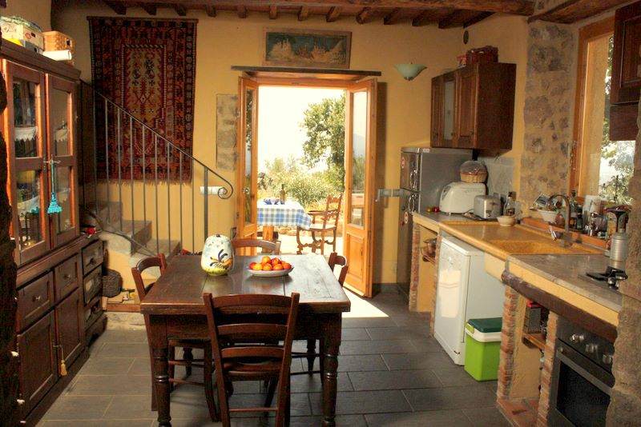
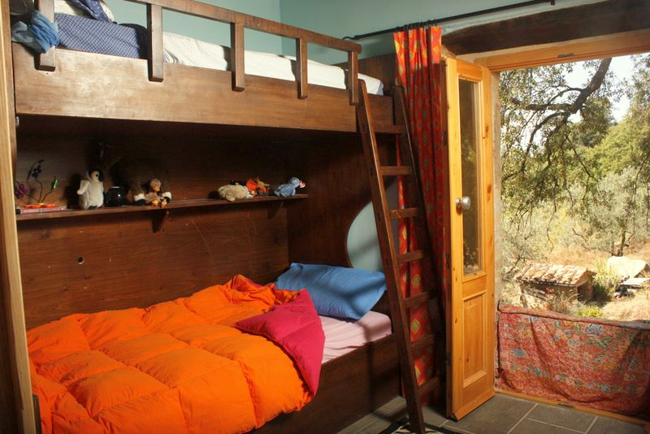
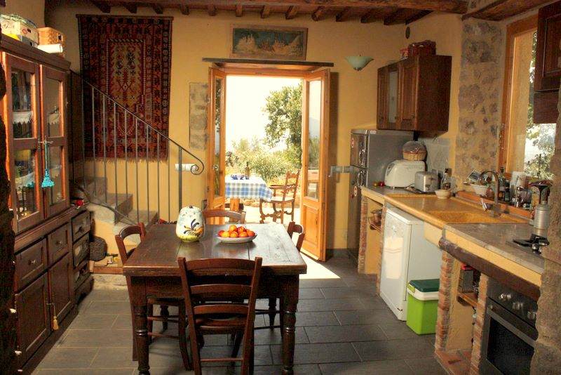
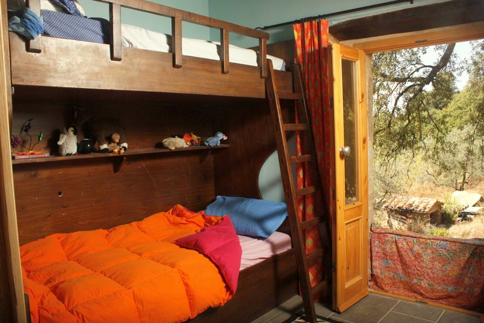

Apartment Roselle
 



The Villa itself comprises of a large lounge with an open fireplace, satellite TV and CD player/radio.Both kitchen and lounge have french doors opening out onto the garden and patio area.The kitchen is fully equipped with hob, cooker and washing machine, iron & ironing board. Upstairs there is a master bedroom with an en suite bathroom (Bath, WC and bidet) and another room with bunk beds and en suite bathroom (Shower and WC). Bedrooms and bathrooms have linen, towels and hairdryer provided.
Outside there is a patio overlooking the garden with wonderful views over the 5 acres of olive groves and vineyards having the Mediterranean sea in the distance. There is a table with chairs and a shared BBQ. There is ample parking and access to this property is down a gravel track of about a mile or so from the main road.
Email: enquiries@gotuscany.co.uk
Telephone: 07714336367